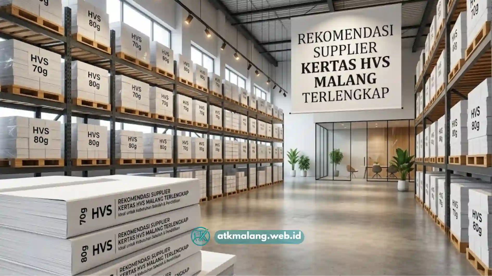

Kebutuhan kertas di lingkungan sekolah memiliki pola yang berbeda dari kantor biasa.
Ada musim ujian dengan permintaan mendadak tinggi, ada kebutuhan administrasi rutin guru dan tata usaha, serta tuntutan legalitas dokumen keuangan untuk pelaporan dana BOS.
Karena itu, memilih supplier kertas hvs malang yang tepat menjadi keputusan penting bagi tim pengadaan sekolah maupun kampus di Malang Raya.
Artikel ini mengulas kriteria supplier Alat Tulis Kantor yang layak dipercaya, perbandingan merek kertas populer, hingga solusi paket ATK bulanan yang memudahkan anggaran sekolah.
Daftar Isi
Kriteria Memilih Supplier Kertas Sekolah Terbaik
Menemukan supplier kertas HVS Malang tepercaya untuk sekolah memerlukan tiga pilar utama: ketersediaan stok merek premium secara konsisten, jaminan SLA pengiriman harian yang cepat, serta dukungan pembayaran invoice resmi.
Alat Tulis Kantor Malang melayani pengadaan kertas sekolah dengan sistem yang memudahkan bendahara dan tim administrasi.
Faktor-faktor yang perlu dipertimbangkan sekolah sebelum menunjuk supplier Alat Tulis Kantor tetap:
- Ketersediaan stok merek terpercaya agar tidak terjadi kekosongan menjelang periode ujian.
- Kecepatan pengiriman sehingga kebutuhan mendadak tetap bisa terpenuhi tepat waktu.
- Kelengkapan dokumen legal, termasuk faktur pajak resmi untuk kebutuhan pelaporan keuangan.
- Fleksibilitas skema pembayaran, terutama bagi sekolah yang menggunakan mekanisme pencairan dana bertahap.
- Konsistensi harga grosir agar anggaran Alat Tulis Kantor tahunan lebih mudah diproyeksikan.
Supplier Alat Tulis Kantor yang memenuhi kriteria ini membantu sekolah menghindari gangguan operasional administrasi, terutama pada periode sibuk seperti ujian tengah semester.
Perbandingan Merek Kertas HVS Sinar Dunia vs PaperOne untuk Sekolah
Di pasaran, terdapat beberapa merek kertas HVS yang umum digunakan institusi pendidikan, masing-masing dengan karakteristik berbeda.
Memahami perbedaan ini membantu tim pengadaan Alat Tulis Kantor sekolah menentukan pilihan sesuai kebutuhan dan anggaran.
Kertas HVS merek Sinar Dunia memiliki serat yang halus dan menjadi standar umum di lingkungan sekolah.
Tingkat brightness-nya cukup terang, harganya ekonomis untuk pembelian grosir Alat Tulis Kantor, dan hasil fotokopi bolak-baliknya tergolong baik.
Merek ini cocok untuk kebutuhan administrasi harian bervolume tinggi.
Kertas HVS merek PaperOne memiliki serat yang sangat halus dengan tingkat brightness lebih tinggi, sehingga hasil cetak terasa lebih tajam.
Harganya berada di kisaran menengah ke atas, namun kecocokannya untuk fotokopi bolak-balik sangat baik dengan risiko tembus tinta yang minim.
Menjadikannya pilihan tepat Alat Tulis Kantor untuk mencetak soal ujian yang membutuhkan ketajaman teks maksimal.

Kertas HVS merek PaperOne dan Sinar Dunia dengan berbagai pilihan untuk sekolah.Kertas HVS merek Bola Dunia memiliki kehalusan serat standar dengan tingkat brightness sedang.
Dari sisi harga, merek ini paling ekonomis, dan cukup baik digunakan untuk kebutuhan draft atau dokumen kerja yang tidak memerlukan hasil cetak premium.
Untuk kebutuhan cetak soal ujian yang mengutamakan ketajaman teks, merek dengan brightness lebih tinggi seperti PaperOne umumnya menjadi pilihan.
Sementara untuk kebutuhan administrasi Alat Tulis Kantor harian, merek dengan harga ekonomis seperti Sinar Dunia lebih efisien dari sisi anggaran.
Sebagai tips praktis Alat Tulis Kantor, tim pengadaan dapat mengestimasi kebutuhan kertas bulanan dengan menghitung frekuensi ujian.
Dikalikan jumlah kelas dan rata-rata halaman soal, lalu ditambah estimasi dokumen administrasi guru seperti absensi, rapor, dan surat menyurat.
Mengapa Bendahara Sekolah Malang Memilih Kerja Sama dengan ATK Malang
Alat Tulis Kantor Malang memahami bahwa kelancaran administrasi keuangan sekolah sangat bergantung pada kelengkapan dokumen transaksi.
Setiap pembelian Alat Tulis Kantor dilengkapi faktur pajak resmi PT/CV yang dibutuhkan bendahara BOS untuk keperluan pelaporan.
Beberapa alasan sekolah di Malang Raya memilih Alat Tulis Kantor Malang sebagai mitra rutin:
- Legalitas usaha lengkap, memudahkan proses audit dan pelaporan dana sekolah.
- Gratis ongkos kirim untuk wilayah Malang Raya, mengurangi beban biaya distribusi Alat Tulis Kantor.
- Riwayat kerja sama dengan berbagai jenjang pendidikan, dari SD hingga perguruan tinggi.
- Kemudahan komunikasi langsung dengan tim pengadaan Alat Tulis Kantor melalui WhatsApp.
Kombinasi legalitas dokumen dan layanan Alat Tulis Kantor yang konsisten membuat ATK Malang menjadi mitra jangka panjang yang tepat.
Solusi Paket ATK Bulanan Murah di atkmalang.web.id
Bagi sekolah yang ingin menyederhanakan proses pengadaan tanpa harus memesan satuan setiap bulan, ATK Malang menyediakan paket Alat Tulis Kantor bulanan.
Paket ini mencakup kebutuhan kertas HVS beserta perlengkapan alat tulis kantor pendukung lainnya.
Skema ini membantu sekolah mengelola anggaran Alat Tulis Kantor secara lebih terprediksi.
Cara memanfaatkan layanan Alat Tulis Kantor ini:
- Kunjungi atkmalang.web.id untuk melihat pilihan paket ATK bulanan.
- Konsultasikan kebutuhan Alat Tulis Kantor spesifik sekolah melalui WhatsApp di 088989643555.
- Sepakati jadwal pengiriman rutin sesuai kalender akademik sekolah.
- Terima pengiriman berkala Alat Tulis Kantor lengkap dengan faktur pajak resmi.
Dengan skema langganan Alat Tulis Kantor ini, tim tata usaha tidak perlu lagi melakukan pemesanan berulang setiap bulan sehingga fokus administrasi dapat dialihkan ke tugas lain yang lebih prioritas.
Kesimpulan Praktis
Memilih supplier kertas HVS untuk sekolah bukan sekadar soal harga, melainkan juga soal legalitas dokumen, konsistensi stok Alat Tulis Kantor, dan kecepatan pengiriman menjelang periode ujian. Dengan mempertimbangkan perbandingan merek kertas serta memanfaatkan paket Alat Tulis Kantor bulanan dari ATK Malang, tim pengadaan sekolah dapat mengelola kebutuhan administrasi secara lebih efisien dan minim gangguan.